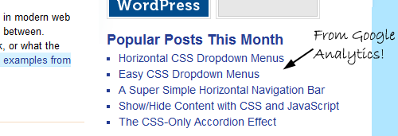
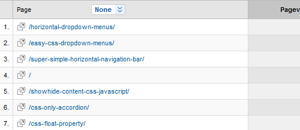

If you’re a typical blog owner, one of your biggest goals is to keep visitors browsing your site. One of the best methods for doing that is to provide links to additional content on your site that your visitors might like. I’ve been doing this for a while with the “Related Articles” section at the bottom of every article (check it out if you haven’t noticed it before).
But many top-tier blogs also showcase their overall most popular posts. These are the articles that often bring in a lion’s share of the site’s traffic, so they must have something going for them, right?
There are a lot of plugins out there that help bloggers rate and publicize the popular content on their blogs. Alex King’s Popularity Contest is a perennial favorite, but it has a lot of overhead, and it often breaks when a new version of WordPress comes out. For that reason, I’ve stopped using it on my site. At one point I’d even written a simple WordPress plugin for my own use that tallied up the number of comments, trackbacks and pingbacks each post had and used that to determine “popularity.”
But let’s say you have a WordPress site and are tracking your stats with Google Analytics. You and I have that in common. If that’s the case, then you already know which pages on your site are the most popular. Google Analytics’ Top Content section makes it a breeze to see what pages on your site get the most traffic (Content -> Top Content, in case you haven’t found it before).
What isn’t as easy is to take that information and display it on your site. But earlier this week I figured out a pretty simple way by piggybacking on an existing popular Google Analytics WordPress Plugin.

On the Shoulders
For this hack, we’re going to piggyback on the Google Analytics Dashboard plugin for WordPress. This plugin is pretty cool: once you install it and provide it with your credentials, you can see your Google Analytics stats right on your WordPress dashboard. Neat, huh?
But what the plugin lacks is any way to share this wealth of information with your readers. The plugin does come with a widget, but the widget only currently lets you display two bits of information: your pageviews over the last month, and a graph showing your pageviews over the last month. However, the plugin contains plenty of functions we can use to get at the information we need.
What You’ll Need
To get this to work, you’re going to need some things first:
- WordPress installed (obviously)
- Google Analytics installed (yep, that too)
- The Google Analytics Dashboard plugin installed and operational
- A willingness to drop a PHP script into your WordPress theme
The PHP Function
Here’s the code that makes it all happen:
<?php
$start = date('Y-m-d', (time() - (60 * 60 * 24 * 30)));
$end = date('Y-m-d');
$showpages = 5;
$thispage = 1;
$login = new GADWidgetData();
$ga = new GALib($login->auth_token, $login->account_id, 60);
$pages = $ga->pages_for_date_period($start, $end);
echo "<ul>";
foreach($pages as $page) {
$url = $page['value'];
$title = $page['children']['value'];
echo '<li><a href="' . $url . '">' . $title . '</a></li>';
$thispage++;
if($thispage > $showpages) break;
}
echo "</ul>";
?>
Now I’ll walk you through (in general terms) what we’re doing here.
The first four lines are variables: the start date from when we want to start pulling data (I’m using 30 days before now), the end date (now), the number of posts to display, and a counter we’ll increment later.
The next three lines are hooks into classes provided by the Google Analytics Dashboard plugin. First we’re calling GADWidgetData, because it gives us easy access to the auth_token and account_id stuff we need to log in to Google. Then we use that data to get access to the GALib class, which contains all the functions the dashboard display uses. Then we use those functions to grab a list of the top pages for the duration specified.
The final lines are just outputting that data. In this example I’m putting mine in an unordered list with a link to each article and the article’s title. Once we’ve hit the number of articles we wanted to show, we stop. You could edit this section fairly easily to change the output (for example, using an ordered list might make more sense…)
And that’s it! You now have an easy and reliable way to display your most popular posts (as determined by page views) on your site. You can see it working in my sidebar right now.
Hey Rob,
Really digging this! One problem though. The title of one of the results is ‘(not set)’.
Is there any way to hide specific results?
Check the top right sidebar.
http://www.mesmerlab.com/
Thanks!
Hi Jason,
I suppose if you knew exactly what you wanted to ~not~ display, you could do something like this in your foreach loop:
if($title != "Naughty Title") { echo '<li><a href="' . $url . '" rel="nofollow">' . $title . '</a></li>'; $thispage++; }That way it won’t display the article if the title is bad, and it won’t count against your total either.
Ok, with your nudging, I customized it a little bit more. I passed up the ones with “(not set)” as well as the home page itself. Then I took out my website name from each title by stopping at the pipe character.
I tried using the double pipe operator and combining both checks, but each combination that I tried was letting both results through.
if($title != “WordPress Development – Magento Development – Mesmer Lab”) {
if($title != “(not set)”) {
$newtitle = substr($title, 0, strpos($title, “|”));
echo ‘‘ . $newtitle . ‘‘;
$thispage++;
}
}
If I were into building WP plugins, I might query the GA results and list them with checkboxes next to each. An admin interface for choosing which results to display would be more user friendly and portable.
That is a really neat feature to show which of your articles is more popular than the others.
Very nice and simple. I was just looking for something like this
Thank you for sharing
Excellent find – this is very useful – I will plan to include this in my site soon – thanks for the share
Excellent tips, thnx for sharing
Is it possible to show a thumbnail image?
Great. Thank you for sharing! I’m trying to do this…
The related post entries is a good way to make your visitors stick to your site along with finding content easily for viewers in which they are interested.
Awesome widget idea–I’ll be implementing it ASAP. One quick question though. Any way to maybe include number of views in the given time period? Thought about including that in parentheses after the title, but no idea how best to do that. It’s probably in the GAD documentation, but I haven’t gotten to investigating that deeply yet.
Thanks for sharing this info…
Pingback: Wordpress Top Posts Based On Google Analytics
Thanks for this post. To me it’s not clear WHERE to paste the php-code you provide. Could you please be more specific in this?
Thanks so much!
Hi Oezman,
The “where” is simply wherever you’d like the analytics information to appear. You’ll have to edit one of your WordPress theme’s PHP files in order to make it happen. In my case, I wanted the information to appear in my sidebar, so I opened up sidebar.php in my theme’s folder, found the spot I wanted it to occupy, and dropped the code in there.
If you wanted it to show up in the footer, you’d generally edit footer.php. If you wanted it just above/below your content, you’d generally edit index.php or home.php (depending on how your theme is set up, not all of these files may exist).
But the basic idea is, drop the code in where you want it to show up. :)
Thanks for the tip! Currently I’m using
Top 10 Plugin via Popular Posts by:
http://ajaydsouza.com/wordpress/plugins/top-10/
I may give Google Analytics Top Content plugin a try in the future.
I may give Google Analytics Top Content plugin a try in the future.
This was really helpful! Thanks for tips and code.
Hi. Thanks a lot for this. I was looking for this as a plugin but it comes with a credits link, which I dont’t like. I saw these changes that Jason did. But I have no idea where to implement them in the code. I’m a complete noob with php so, could someone PLEASE paste the entire code with Jasons changes? I would be very happy. Thanks.
ps. i can get it to work just fine, as long as I stick to the code without the changes.
Hi Rob,
First of all, thanks for your precious tip to show popular posts.
I’ve been successfully using your php function along with “google analytics dashboard 1.0.6″ on my blog.
But recently the plugin’s been updated to “2.0.1″ and your php function doesn’t work anymore.
Would you please update your php function?
Thanks in advance.
Nice idea, but you’ll get logged out of google analytics after a while and then your blog will show an error rather than top content.
Hey Rob, this sounds like a grand snippet. However I get no output from it, what could’ve gone wrong? Thanks a lot for the post.
Pingback: Álvaro Martínez Majado
indeed, very nice tool. thanks!
look here another interesting tool:
http://freshwebtrends.com
The good news is this method still works, but the plugin has gone through a change in the login method (yay OAuth!). After doing a little bit of editing, I was able to get this to work on my site. I also changed the way this works by making it a function and adding an array to hide unwanted titles. The code is below. Thanks for discovering this in the first place! Love it!
// Display Popular Posts based on Google Analytics
// via http://www.cssnewbie.com/google-analytics-top-content-in-wordpress/
// using http://wordpress.org/extend/plugins/google-analytics-dashboard/
// updated for oAuth using gad-widget-data.php
function ga_popular_posts() {
// User Parameters
// How far back to search (in days)?
$searchrangedays = 30;
// Show how many posts?
$showpages = 5;
// Hide specific posts (by title)?
// add additional ‘$gaHidePosts[] = “Title”;’ (without ‘single quotes’) to hide more posts.
$gaHidePosts = array();
$gaHidePosts[] = “Naughty Title”;
// Do Not Edit Below This Line
$start_date = date(‘Y-m-d’, time() – (60 * 60 * 24 * $searchrangedays));
$end_date = date(‘Y-m-d’);
$thispage = 1;
$login = new GADWidgetData();
if($login->auth_type == ‘oauth’) {
$ga = new GALib(‘oauth’, NULL, $login->oauth_token, $login->oauth_secret, $login->account_id);
} else {
$ga = new GALib(‘client’, $login->auth_token, NULL, NULL, $login->account_id);
}
$pages = $ga->pages_for_date_period($start_date, $end_date);
$gaPopularPosts = “”;
foreach($pages as $page) {
$url = $page['value'];
$title = $page['children']['value'];
if( !in_array($title, $gaHidePosts) ) {
$gaPopularPosts .= ‘‘ . $title . ‘‘;
$thispage++;
}
if($thispage > $showpages) break;
}
$gaPopularPosts .= “”;
echo $gaPopularPosts;
}
Thanks for this awesome post. I took your code, and created a public plugin for it. Check it out! http://j.ustin.co/wbEYvp
got this error:
Warning: Missing argument 4 for GALib::GALib() :-(
Pingback: Álvaro Martínez Majado
Pingback: Álvaro Martínez Majado
Hi Rob,
I’m getting this error:Missing argument 4 for GALib::GALib()
can anyone help me?
thanks , perfect